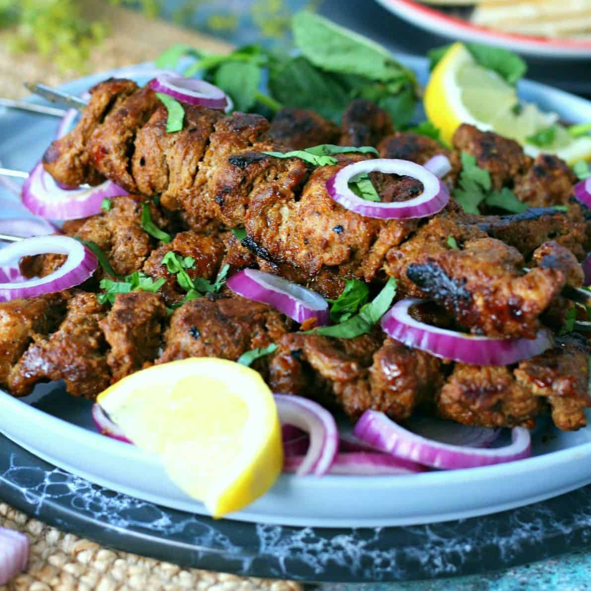

Bar-B-Q
Bihari Kabab

Skewered pieces of meat marinated in spice. Originally a dish from the non-vegetarian cuisine, Muslims invented Bihari kabab of the North Indian state of Bihar as it is made out of beef. It has spread to other countries.
Back to Home